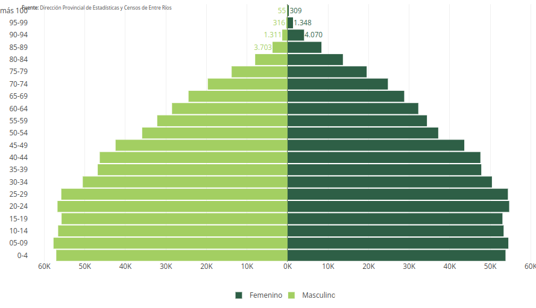
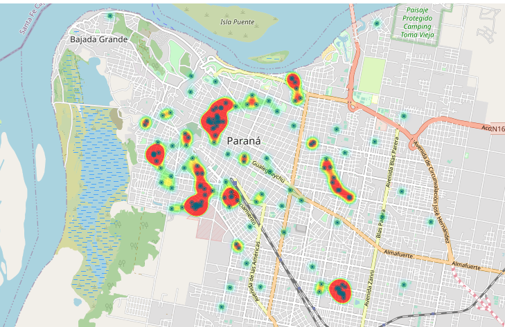

De esta manera, los datos se transforman en información que genera un conocimiento nuevo
u opinión sobre un evento en particular y en consecuencia, colabora en la toma de
decisiones orientadas a mejorar las condiciones de salud de la población.
Monitor Vacunas Covid-19
Vacunas aplicadas por semana, por departamento según tipo de dosis. Lógistica de distribución: Ingresos de vacunas a la provincia por vacuna y distribución por departamento.
Ver monitor
Covid-19
La información analizada es la notificada por los nodos epidemiológicos de la Provincia de Entre Ríos al Sistema Nacional de Vigilancia en Salud (SNVS 2.0).
 Ir...
Ir...
Indicadores Demograficos

La pirámide de población es una herramienta de visualización de la composición por sexo y edad de una población. Es un histograma doble en el que por medio de barras horizontales se visualiza el peso de la población por edad.
Ir...
Dengue
En el período 2019-2020 se produjo el brote de dengue de mayor magnitud que se haya registrado hasta el momento en Argentina. En el caso de Entre Ríos, fueron confirmados 650 casos en el mencionado período.

Ir...
Indicador
Indicador